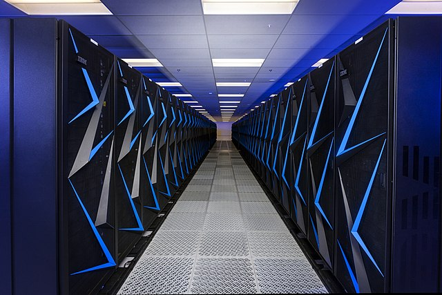
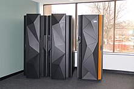
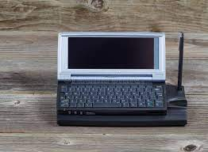
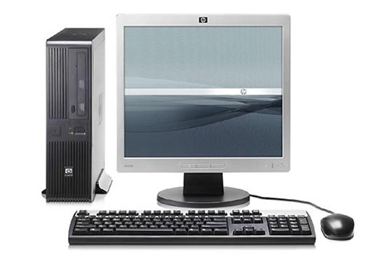

A computer is a machine that can be programmed to do sequences of arithmetic or logical operations automatically. Modern digital electronic computers can perform generic sets of operations known as programs. These programs enable computers to perform a wide range of tasks. A computer system is a nominally complete computer that includes the hardware, operating system, and peripheral equipment needed and used for full operation.
| The 4 major types of computers are | |||
|  |  |  |  |
| Supercomputers | Mainframe computers | Minicomputers | Personal computers |
Supercomputers are the most powerful and expensive types of computers available. They were first invented by Roger Cray in 1976. These are made to process a huge amount of data. Its uses include weather forecasting, scientific simulation, and nuclear energy research. These can cost millions of dollars, whereas even the cheapest ones can be as expensive as $10,000.
Mainframe computers are made to allow hundreds of thousands of users to use programs at the same time. They have the power to run many programs and processes at the same time. These capabilities make this type of computer a viable option for big organizations in different fields like banking, telecom, etc.
Minicomputers are a type of computer that, when compared to both supercomputers and mainframe computers, is smaller. Because of its small size, it is a very portable device. Its small size also makes it far cheaper than other types of computers. These advantages make it important for people who need a computer that is portable or cheap.
Personal computers, also known as Microcomputer, are one of the most common types of computers. They can be found in almost every household. These can cost around $1500. These are mostly used for personal activities like watching a video, doing an assignment, etc.